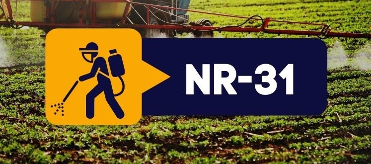

Nr 31- O curso de NR-31 é um treinamento voltado para a Norma Regulamentadora 31, que trata da segurança e saúde no trabalho na agricultura, pecuária, silvicultura, exploração florestal e aquicultura. Essa norma estabelece requisitos e diretrizes para garantir condições adequadas de trabalho para os profissionais que atuam em atividades rurais, com foco na prevenção de acidentes, doenças ocupacionais e melhoria das condições de saúde no ambiente rural.

// NR-31
// O curso geralmente aborda os seguintes temas:
-
Introdução à NR-31:
Apresentação da Norma Regulamentadora 31 e sua importância para as condições de trabalho no setor agrícola e pecuário.
A importância do cumprimento da NR-31 para prevenir acidentes e garantir a saúde e segurança dos trabalhadores rurais. -
Condições de Trabalho na Agricultura e Pecuária:
Estudo das condições de trabalho nas atividades rurais, identificando os riscos comuns nessas atividades, como exposição a produtos químicos, uso de máquinas pesadas, riscos biológicos e ambientais.
A importância da organização do ambiente de trabalho para garantir a segurança. -
Máquinas e Equipamentos Agrícolas:
Procedimentos de segurança para o uso de máquinas e equipamentos, como tratores, colheitadeiras e pulverizadores.
Manutenção preventiva das máquinas e a correta utilização para evitar acidentes, como atropelamentos e acidentes com as lâminas e partes móveis. -
Uso de Produtos Químicos e Agrotóxicos:
Regras para o manejo seguro de produtos químicos, fertilizantes e agrotóxicos, evitando intoxicações e contaminações.
A importância do uso de Equipamentos de Proteção Individual (EPIs), como luvas, máscaras e roupas específicas para o manuseio de agrotóxicos. -
Saúde do Trabalhador Rural:
Riscos à saúde relacionados ao trabalho no campo, como doenças respiratórias, dermatoses e intoxicações por agrotóxicos.
Medidas de prevenção e cuidados com a saúde dos trabalhadores rurais, como campanhas de vacinação e controle de verminoses. -
Segurança no Trabalho com Animais:
Procedimentos de segurança ao lidar com animais, como gado, equinos e outros animais de grande porte.
Como evitar acidentes com mordidas, quedas e outras lesões durante o manejo animal. -
Riscos Biológicos e Ambientais:
Identificação e controle de riscos biológicos, como a exposição a doenças transmitidas por animais, parasitas e microrganismos.
Cuidados para reduzir a exposição a condições ambientais adversas, como radiação solar intensa, chuva e poeira. -
Sinalização e Organização do Ambiente de Trabalho:
Como realizar a sinalização adequada nas áreas de trabalho rural, como em silos, armazéns e locais de armazenamento de produtos químicos.
A importância de manter o ambiente de trabalho organizado para prevenir acidentes. -
Treinamento em Primeiros Socorros:
Procedimentos básicos de primeiros socorros, abordando como agir em caso de acidentes, como queimaduras, cortes e intoxicações.
A importância de saber realizar os primeiros atendimentos até a chegada de profissionais médicos. -
Normas de Segurança e Equipamentos de Proteção:
Identificação dos Equipamentos de Proteção Individual (EPIs) e Equipamentos de Proteção Coletiva (EPCs) necessários no ambiente rural, como capacetes, botas, óculos de proteção, respiradores, entre outros.
A importância da correta utilização desses equipamentos para garantir a segurança do trabalhador.